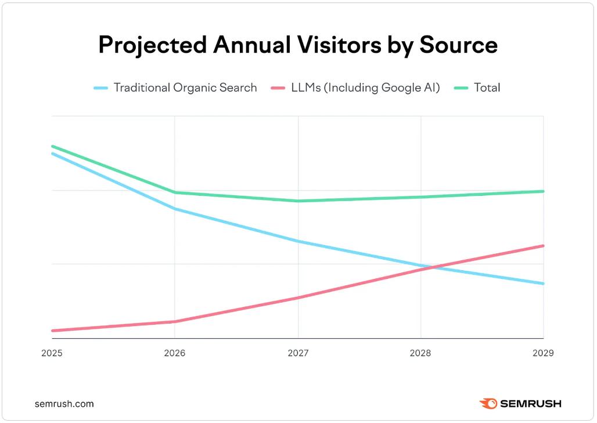

Generative engines are becoming the primary gateway to discovery.
Customers no longer click through search results — they ask AI, and AI decides which brands get cited.
Today, Scania's content is crawlable and trusted, but largely invisible inside AI-generated answers. The issue is not access or quality — it is structure, clarity, and machine-readable context.
This proposal outlines how Valtech will assess and strengthen Scania's Generative Engine Optimization (GEO) maturity — ensuring Scania is understood, cited, and trusted by AI systems such as ChatGPT, Google AI Overviews, and future generative interfaces.
Our audit and recommendations focus on three critical levers:
The outcome is clear: protect existing visibility, capture first-mover advantage, and ensure Scania remains discoverable where decisions are increasingly made — inside AI answers.
A layered framework. Each tier strengthens the one above — technical foundations enable content that earns brand visibility inside AI answers.
If search engines or LLMs can't crawl, index, or interpret our page — we don't exist.
Generative engines like ChatGPT or Google AIO rely heavily on structured, trusted sources. Pages with proper schema markup and clear semantics are far more likely to be cited, summarized, or recommended.
So our content matches search intent with clarity and depth, by users and algorithms.
GEO isn't about keyword stuffing. It rewards clarity, depth, and accuracy. LLMs surface content that teaches, explains, or solves — not just ranks. Content clusters, FAQs, and explanatory depth win in this model.
When our brand shows up consistently and recognizably across every touchpoint, we stay top-of-mind when decisions are made.
LLMs rely on link graphs to assess credibility. If a page is isolated — no matter how good the content — it risks being ignored by AI. Connected content is cited content.
Presenting one unified, authoritative voice, for both humans and machines.
3,500% traffic surge from generative AI to US retail sites (Adobe, 2024–2025)
By 2026, 25% of search queries will migrate to AI assistants (Gartner).
80% of users now rely on AI summaries for 40%+ of info needs (Bain)
Gartner predicts a 50% drop in traditional organic search traffic by 2028

GEO starts by making your entities and relationships machine-legible (brand, products, people, locations) and propagating structured data across templates, not one-off pages.
This lets gen engines and AI summaries reliably understand who/what you are and when to cite you.
We embed Q&A blocks, definitions, comparisons, and step-by-steps so models can lift clean, concise answers, complete with source context and signals of trust.
This is how you get used (and cited) when users don't click through.
We refactor internal links and IA to mirror real-world relationships (topic → subtopic → product), reinforcing entity clarity and discoverability.
This improves how crawlers (and models) navigate and interpret context.
Traditional rankings/CTR miss what happens inside AI answers, so we track AI inclusion rate, citation frequency, and answer share vs. competitors, then tune content and authority signals accordingly.
A new file format — like robots.txt or sitemap.xml — but for AI language models (LLMs).
robots.txt verified April 30, 2026 — all AI crawlers permitted. The access problem does not exist. The citation problem does.
robots.txt is clean. The remaining gaps are all content and schema — solvable in weeks, not months.
AI systems crawl scania.com freely — but have no curated guide to priority pages. A single Markdown file at /llms.txt pointing to product pages, sustainability hub and newsroom fixes this in one day.
Zero JSON-LD schema across the entire site. AI bots can read Scania's content but cannot reliably extract structured facts — specs, commitments, quotes — to cite in answers. FAQPage and Product schema are the highest-priority fix.
Technical documentation is blocked in robots.txt at /content/dam/.../technical-documentation. Converting key specs to HTML product pages with Product schema makes them both accessible and AI-parseable — and solves the robots.txt block in the same step.
Live audit of all five competitors confirms: zero GEO implementation across the board. No FAQPage schema. No Product schema. No llms.txt. No AI bot configuration. This is a category-wide gap — and a first-mover opportunity for whoever acts first.
| Competitor | Schema | llms.txt | AI bots | Structured data | Assessment |
|---|---|---|---|---|---|
| Volvo Trucks | None | Missing | Not configured | None | Strong brand globally — first to act wins |
| Mercedes-Benz Trucks | None | Missing | Not configured | None | Strong digital presence — no GEO layer |
| MAN | None | Missing | Not configured | None | VW Group — may move fast once GEO is prioritised |
| IVECO Group | None | Missing | Not configured | None | Smaller digital team — slower to react |
| International | None | Missing | Not configured | None | North America focus — lower EU AI search risk |
Audited April 2026. Schema and llms.txt verified via live crawl of homepage and robots.txt.
When buyers ask AI assistants about trucks, powertrains, or sustainability — no manufacturer is winning. The brand that implements GEO first captures this share of voice by default.
All five major competitors have zero GEO implementation. The first brand to publish llms.txt, FAQPage schema and Product schema becomes the default AI citation source for heavy truck queries — a position that is hard to displace once established.
Scania has strong sustainability content, detailed technical specs, and a busy newsroom. The gap is not content — it is structure. Adding schema and llms.txt to existing pages is weeks of work, not months.
As AI search matures, early citations build compounding authority. Volvo and MAN have larger digital teams and will move once GEO reaches their roadmaps. Scania's advantage exists today — it will narrow in 12–18 months.
| KPI | Baseline (Apr 2026) | Target (90 days) | Tool |
|---|---|---|---|
| AI bot access (robots.txt) | ✓ Confirmed – all bots allowed | Maintain – monitor after any change | Google Robots Testing Tool |
| Pages with FAQPage schema | 0 | 15+ | Rich Results Test |
| Pages with Product schema | 0 | All truck + bus pages | Rich Results Test |
| llms.txt published | No | Yes – within 1 week | Manual: scania.com/llms.txt |
| AI Overview impressions (GSC) | Not tracked | Baseline established | Google Search Console |
| Brand citations in AI search | Not tracked | Baseline established | Semrush AI Toolkit |
| Share of voice vs Volvo (AI) | Not tracked | Baseline established | Otterly.ai |
Engagement kick-off – alignment and planning
Stakeholder interviews (up to 4 × 1 hour)
Report generation, analysis and recommendations
Audit presentation and hand-over
Hands-on support to Scania's execution teams on:
Updated audit, analysis of actions vs. targets, follow-up meetings with stakeholder and team, additional advisory, coaching and support.
Caroline Gadd holds the role as Global SEO & GEO Lead at Valtech, based in Stockholm, Sweden. She specializes in search strategy, Generative Engine Optimization (GEO), and AI-driven visibility, helping organizations strengthen their digital presence as search and discovery rapidly evolve. Caroline works closely with clients to improve technical foundations, content structure, and brand authority so their content is discoverable, understandable, and trusted by both users and AI-powered search engines.